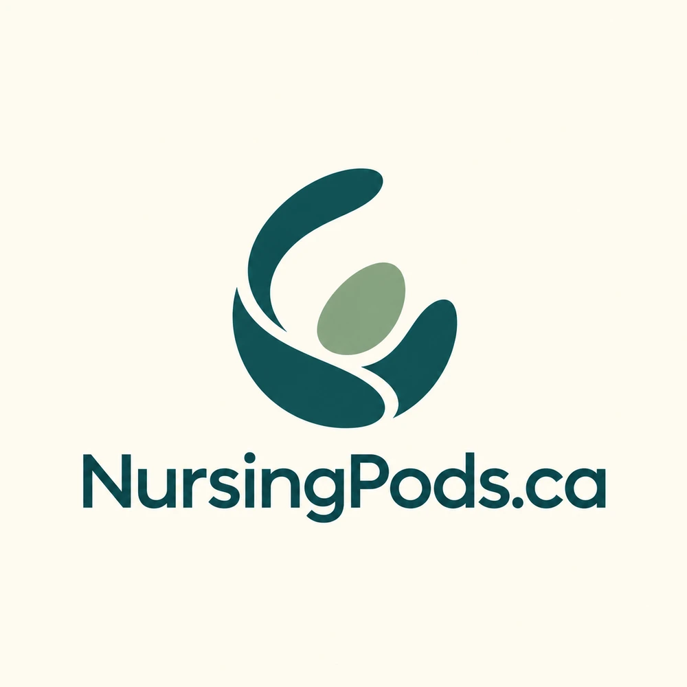
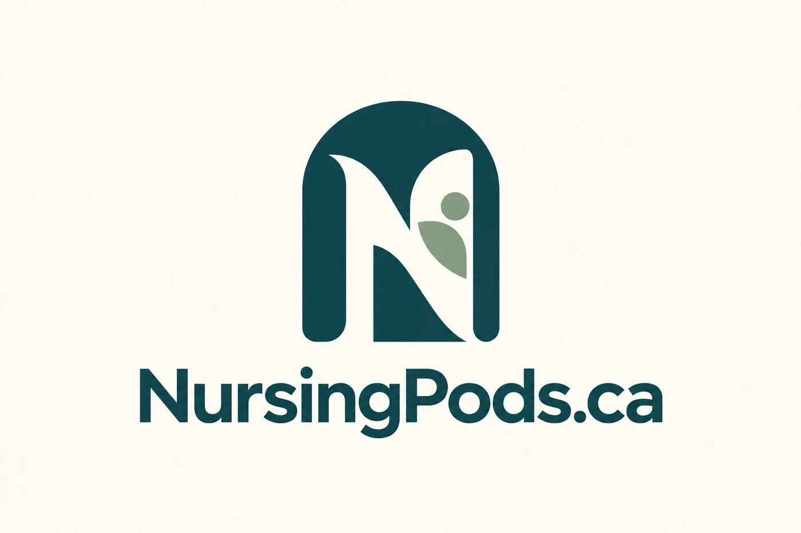
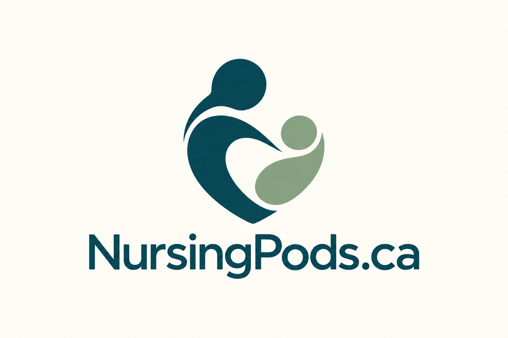
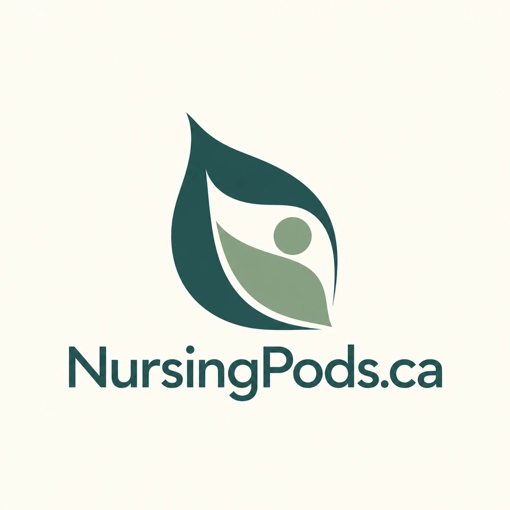

NURSINGPODS.CA / BRAND EXPLORATION
Choose the direction that feels right for your business. These options are for review; the website’s current identity stays in place until you choose.
An architectural arch brings privacy and parent-focused care together.

A soft, organic direction built around warmth and protection.

A clear architectural identity connecting the name to a private space.

A human, caring direction with a simple, memorable symbol.

A calm, natural mark that balances shelter with openness.